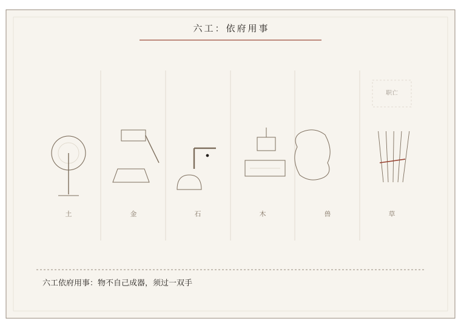

曲礼下 · 二·四十七 · 第 170 课
天子之六工：土工、金工、石工、木工、兽工、草工，各制六材。注「此亦殷时制也，周则皆属司空……唯草工职亡，盖谓作萑苇之器」。
说什么事：六工之名，及其所制之材。
落在哪一层：礼。论材之成器。
为何编在此位：府藏其物，工制其材，府先工后，物先器后。
【经】天子之六工，曰土工、金工、石工、木工、獸工、草工，典制六材。
【注】此亦殷時制也，周則皆屬司空。土工，陶、旊也。金工，築、冶、鳧、栗、鍛、桃也。石工，玉人、磬人也。木工，輪、輿、弓、廬、匠、車、梓也。獸工，函、鮑、韗、韋、裘也。唯草工職亡，蓋謂作萑葦之器。
【疏】工，能也，言能作器物者也。前既有六府之物，宜立六工以作之为器物，故为次也。亦有六者，依府以用事也。此六官于《周礼》并属司空，而《司空》职散亡，汉购千金不得，今唯有《考工记》以代之。「典制六材」者，材谓材物，结上立此六工，使典制六府之材物。或言氏、或言人者，郑注《考工记》云：「其曰某人者，以其事名官也；其曰某氏者，官有世功，若族有世业者也。」干宝云：「凡言司者，总其领也；凡言师者，训其徒也；凡言职者，主其业也；凡言衡者，平其政也；凡言掌者，主其事也；凡言氏者，世其官也；凡言人者，终其身也。不氏不人，权其材也。」
六工 土、金、石、木、兽、草。依六府之材而立。
典制 主其事而制其材。
旊 《考工记》「旊人为簋」。陶、旊并为土工。
韗 治皮革之工。
萑苇 芦类。疏谓草工所作。
氏与人 疏引郑注：称某氏者世其官，称某人者以事名官。
天子的六工是土工、金工、石工、木工、兽工、草工，各制六种材物。
此节把六府所藏之物，交到六种人手里。疏说得很直：「前既有六府之物，宜立六工以作之为器物」。物不自己成器，须经过一双手。礼制在此写下最后一环。
第一层 依府用事 疏「亦有六者，依府以用事也」。六工的数目不是自定的，是照着六府来的。土对土工，金对金工，一一相承。
第二层 六工之目 注列甚详：陶、旊为土工；筑、冶、凫、栗、锻、桃为金工；玉人、磬人为石工；轮、舆、弓、庐、匠、车、梓为木工；函、鲍、韗、韦、裘为兽工。一件器物背后，是一串专门的名称。
第三层 草工职亡 注「唯草工职亡，盖谓作萑苇之器」。六工之中，唯此一职失传。疏又言《周礼·司空》职散亡，汉购千金不得，唯《考工记》代之。礼书有亡，是常事；此节正留下一个缺口。
第四层 氏与人之别 干宝一段最精：言司者总其领，言师者训其徒，言职者主其业，言衡者平其政，言掌者主其事，言氏者世其官，言人者终其身，「不氏不人，权其材也」。一个官名里的一个字，定了他是一世还是终身。
与今日何干 任何一个行当，名字里都藏着它的来历：称「氏」的多是世家，称「人」的多是按事设的。手艺的传承，写在称谓里。
| 左 | 右 |
|---|---|
| 天子之六工 | 土、金、石、木、兽、草 |
| 典制六材 | 依六府之材而制之 |
| 土工：陶、旊 | 金工：筑、冶、凫、锻、桃 |
| 石工：玉人、磬人 | 木工：轮、舆、弓、庐、匠、车、梓 |
| 兽工：函、鲍、韗、韦、裘 | 草工职亡，盖作萑苇之器 |
| 言氏者世其官 | 言人者终其身 |
画六格横排：第一格一只陶轮（圆盘加中轴）；第二格一把小锤与一枚砧；第三格一块素石与一枚小磬（折角形）；第四格一段木与一柄刨；第五格一张展开的兽皮；第六格一束苇秆。六格等距，格与格之间以细竖线分隔。第六格上方留一小块空白（示职亡）。不写文字、不画人。赭色只用在第六格那束苇秆的捆绳上。
